This script/plug-in contains a set of functions to perform path and stroke editing. The user is assumed to be somewhat familiar with the path editor and with some concepts underlying Gimp paths. If necessary a short write-up can be found on http://www.gimp-forum.net/Thread-Paths-Basics.
All the functions act on an existing path, and are accessed via the “Edit” sub-menu of the right-click menu in the Paths list dialog.
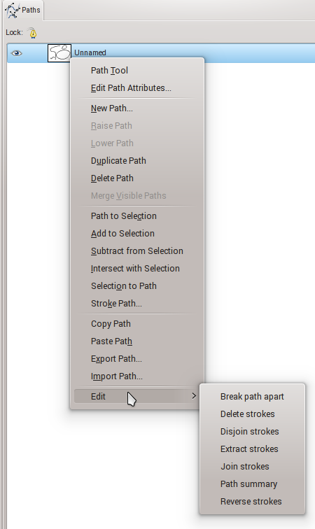
Path summary is useful to determine path and stroke characteristics that cannot be checked
visually, such as the actual number of strokes, and their direction and closure. This function
produces a message which, depending on the Gimp setup, is either displayed in a dialog or is just
added to the error console. The message contains:
And for each stroke:
For instance:
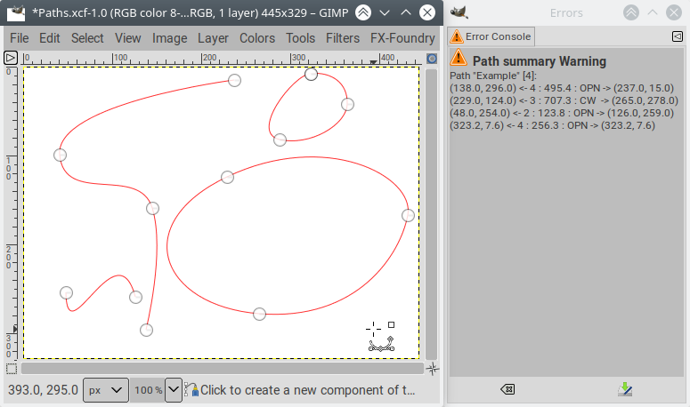
Path "Example" [4]:
(138.0, 296.0) <- 4 : 495.4 : OPN -> (237.0, 15.0)
(229.0, 124.0) <- 3 : 707.3 : CW -> (265.0, 278.0)
(48.0, 254.0) <- 2 : 123.8 : OPN -> (126.0, 259.0)
(323.2, 7.6) <- 4 : 256.3 : OPN -> (323.2, 7.6)
Note that:
Reverse strokes swaps the ends of the strokes in the selection.
A stroke is in the selection if at least one of its anchors is in the selection.
If there is no selection, all the strokes are reversed (in practice this means
that a selection is not needed when there is only one stroke in the path).
The reversed stroke is visually identical to the original stroke.
The only way to check the result is to use the Path summary function above
and check that the coordinates of the extremities have been swapped.
Stroke direction is of course important in several cases:
Ink tool, for instance)Text along path)Extract strokes and Delete strokes remove strokes from the path. Extract strokes removes all but the
selected strokes, and Delete strokes removes the selected strokes.
Different selection methods can be used, closed strokes where anchors are difficult to spot can be framed by a rectangle or ellipse selection, open strokes are easily selected by just selecting one of their extremities.
After selection:
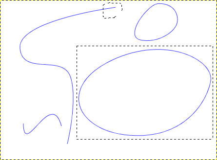
After Delete strokes:
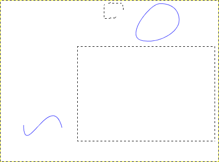
After Extract strokes:
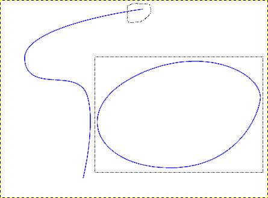
Extract anchors and Delete anchors remove anchors from the path strokes.
Extract anchors removes all but the selected anchors,
and Delete anchors removes the selected anchors.
The remainging anchors of a stroke remain connected as a single stroke
(deleted anchors are replaced by a segment).
After selection:
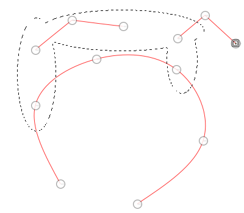
After Delete strokes:
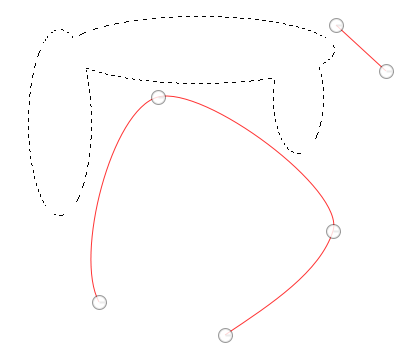
After Extract strokes:
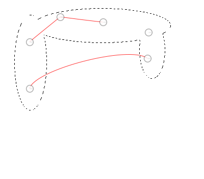
Break path apart copies each stroke in the path to a new path. The individual paths are produced in the order of the
strokes in the path, which may have nothing to do with their actual relationships.
Break text path apart works like Break path part but attempts to keep together in the same path
strokes that come from the same character, so that the end result is hopefully one path per letter.
In practice it keeps together strokes that are nested, so parts of letters that are non-contiguous
(diacritics marks such as the dot on i with standard fonts, and character parts in decorative fonts)
end up in distinct paths.
The individual paths are produced in the order of the strokes in the path,
which may have nothing to do with their actual relationships.
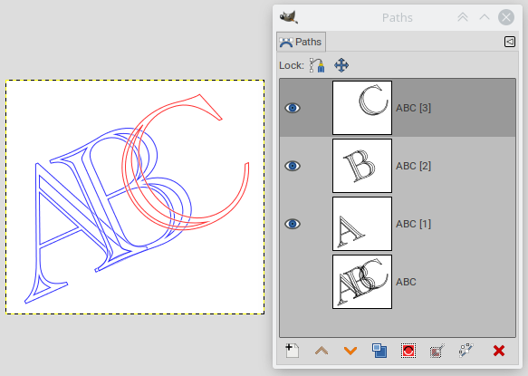
The current algorithm has been tested with convoluted decorative fonts. In case it fails on some fonts,
try increasing the number of anchors with the Densify anchors function.
Break path apart by nesting order creates paths that contain all the strokes at the same nesting level (the first level
contains all the strokes that are not enclosed in any other stroke). The first level is at the bottom of the stack so that
processes that work up the stack (such as animations and related scripts) put the nested levels last,
where they won’t be masked by the enclosing ones.
For instance a path like this:
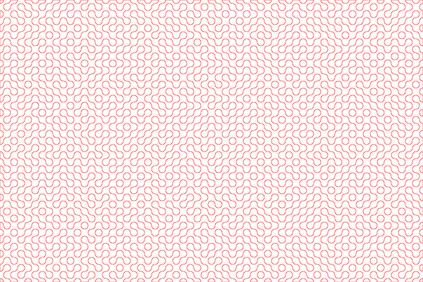
Produces three paths (delineating the blue, dark green and light green areas):
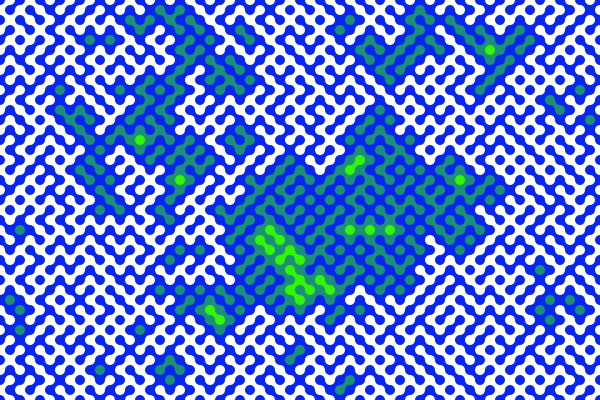
These two functions reorder the strokes in the path in the order of the center of their bounding boxes. There is no visual difference, but having the right order can be important when using the path for animations.
Join strokes splices together strokes that have extremities that are close enough to each other (X and Y coordinates
differ by less than one tenth of a pixel). It will also properly close strokes that look closed only because
they have overlapping extremities. The result of Join strokes is visually identical to the initial path.
Path summary will of course show the difference, but having a single stroke is also important in other
occasions;
Text to pathInk) are sensitive to the end of strokes and won’t give
the same results on two disjoint strokes as on a single stroke.A good use case is producing symmetrical closed strokes:
Create one half of the path, with extremities along the middle axis:
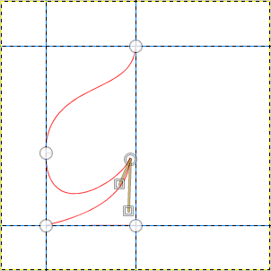
Duplicate the path and flip it with the Flip tool in “Path” mode:
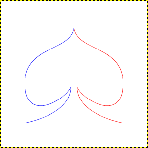
Merge the two paths (Merge visible paths in the Paths menu):
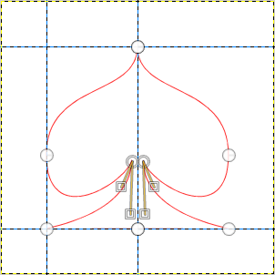
At that point there are still two strokes:
Path "Spade" [2]:
(150.0, 50.0) <- 5 : 533.2 : O -> (150.0, 250.0)
(150.0, 50.0) <- 5 : 533.2 : O -> (150.0, 250.0)
Apply Join strokes, the path still looks the same, but there is only one stroke:
Path "Spade" [1]:
(150.0, 250.0) <- 8 : 1066.4 : C -> (250.0, 250.0)
The anchor in the middle of the foot is superfluous and can be removed (Ctrl-Shift-Click):
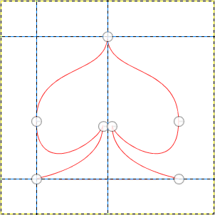
Path "Spade" [1]:
(50.0, 250.0) <- 7 : 1066.4 : C -> (250.0, 250.0)
Disjoin strokes is the opposite of Join strokes: it cuts strokes on the selected anchors to
make two strokes with overlapping extremities. If the stroke is a closed stroke, it is replaced by
a pseudo-closed stroke: one anchor is added at one end to overlap the anchor at the other end and
the stroke is marked open.
Densify anchors doubles the number of anchors in a path, by adding one anchor between each pair of anchors.
This does not change the shape of the path, but merely makes it more resilient to abuse or mistreatment.
For instance, Break text path apart can more accurately identify nested strokes if there are more anchors.